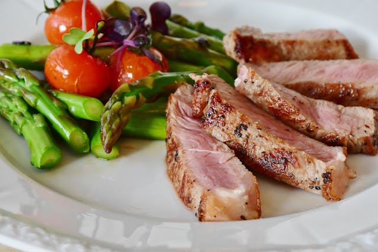

Welcome! So good to have you here! As you may know,
the health of America has been on a downward decline since the late 20th century.
This is largely due to the changes that have been set in place by large food
companies. Natural foods have been altered and formed into other "foods" that are more
addictive, and simultaneously harder for people to moderate consumption of.
But there's some good news!
Sapere Foods aims to inform people not only of the dangers that result from unfettered
manducation of ultra-processed foods, but also of the plethora of benefits
stemming from a diet of natural whole foods.
Instead of just letting the world continue to drown in chronic
illness and disease, due to poor diet choices, we want to build a
community of people that instead see a future and state of the world that has
greater, cheaper, and more convenient access to healthy and pure foods. YOU can
make a difference in the world simply by setting an example, and taking
steps to live a healthier life.

Sapere Foods aims to show the world that delicious and healthy food is not and
should not be out of reach. And you can also be a part of this by supporting in any
way you can think of; whether that's working with your friends
to improve your diets, encouraging a friend that's trying to get
healthier, or even just following and supporting our movement on our social
media pages. The more of these things you do, the greater the positive change
in the world!
How to connect with our community:
To become a part of our community, be sure to follow our media accounts (linked below) for daily content
to inspire and help you move towards a healthier diet
and lifestyle. We hope to be with you every step
of the way on your path towards healthier living!